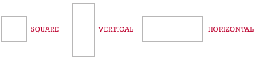
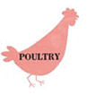
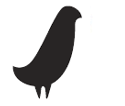

The Play Process / Introduction / 6 Steps
Case Studies / Under My Bed / Rhyming Slang / Fat Type
Extras / The Wall / Download / About Me
How-To
Why do I need to learn how to play? Playing, afer all, is something that's ingrained in us from those early childhood gladiatorial days, sweating in the sun. These six steps, drawing upon those memories, apply that relaxed and open mindset to a new design process. The range of projects is really limitless (whether it's print or even, your parents willing, body art) and the results are always fresh and inspiring.
a format and start making. The three format choices each have their own built-in design limitations, visually. Longer shapes won’t fit in the square format with the same impact as the other options, so choosing one structure over the other directly affects the end work. This doesn’t mean the final size dimensions will be the same as the starting size. Remember, this process encourages fluidity.
Choose one.

be anything: a photograph, a piece of cloth, or even a piece of lint. Don’t, however, pick a Seed that you’ve already created. That’s cheating! You’ll have pre-existing contextual information to fight against. The whole point
is to create something new, without any message already tucked into it.

Example
This Seed is a simple chicken silhouette
from an old cookbook.
and start with a fresh shape.

Example
This Morsel is a simplified
graphic of the Seed.
why not just drag them off to the side, layering each discarded piece until
it becomes its own unconscious work. This chaotic jumble offers a glimpse into the process by collecting the unused components. Frame them and
save them. Check out the Leftovers for the Rhyming Slang project.
the play development. Check out the Added Value of the Fat Type project.